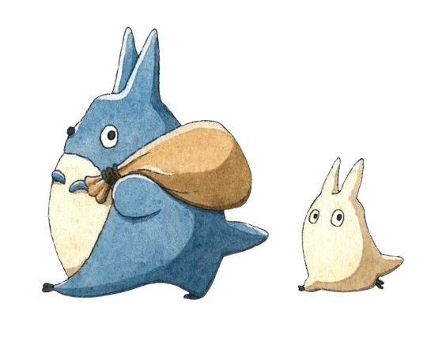
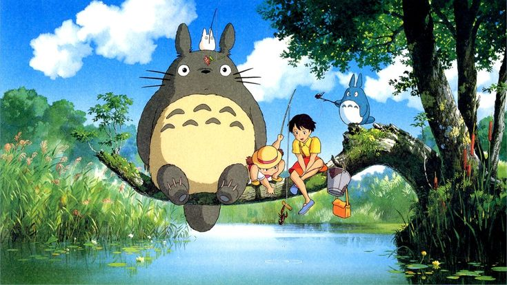

I'm Bochra, a Business Analytics junior who thinks in questions first, queries second. I love to build end-to-end analyses that connect data to real decisions.


01A digital agency was running paid ads on Facebook and Instagram — and losing customers somewhere between impression and purchase. I built a full funnel analysis pipeline to find exactly where, and why.
A network of hospitals was facing frequent readmissions of diabetic patients, with little visibility into the underlying causes. We built a BI solution to analyze a decade of clinical data and uncover exactly where and why patients were coming back.
Walmart's sales data is messy, sprawling, and full of patterns nobody bothered to name yet. I cleaned it, engineered time features, and answered: when does Walmart actually sell, and to whom?
I'm a Business Analytics junior at Tunis Business School, minoring in Information Technology.
I came to Business Analytics from two directions at once — marketing taught me how businesses think, IT taught me how systems work. Analytics is what happens when those two meet. That's not a coincidence, that's the whole point.
I interned at The Mashroom, a startup where I did market research and built prospect pipelines in a fast-paced environment.
I've used Notion to organize pretty much all my work since freshman year — tasks, projects, notes, everything. At some point it stopped being a tool and became a habit.
Open to internships | Part-time jobs — on-site in Tunis, Nabeul or remote.
Always happy to talk through a project or just say hi.